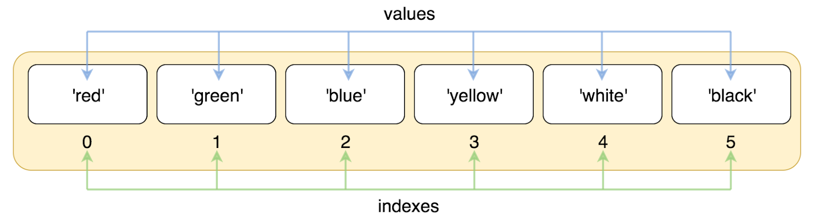

Python Terminal:
Use this terminal to test the code below, and to experiment with the things in this lesson!
IT MAY TAKE A MOMENT TO POP UP AND BE READY FOR USE
To open the Python terminal:
- Click the 'Shell' tab below
- Type 'python3' (without the quotes) into the first line
- Run code!
NOTE: Code will not auto-indent in the Python terminal, so you will have to use "tab" to indent
lines that need indentation.
NOTE: If the terminal does not let you keep typing in the, refresh the page and try again.
Lesson Content:
To motivate this week's lesson, lets take this situation:
Suppose we want to make a program that does the following:
- Takes in a group of usernames, and
- Greets each individual user
How can we do this with the things that we know already?
Assignment:
One valid approach would be to store each of the usernames in its own variable,
and refer to it that way. It would look something like:
user1 = "goBears2021"
user2 = "awesomeGerbil89231"
print("Hello " + user1)
print("Hello " + user2)
Pros
- It is clear which variable is assigned and printed
Cons
- Does not allow for names to change, unless you go in and manually
change what user1 and user2 are
- Takes forever to write
Using Functions:
We could definitely use a function. It would look something like:
def greeter(user1, user2, user3):
print("Hello " + user1)
print("Hello " + user2)
print("Hello " + user3)
Pros
- Looks clean
- Allows for user input
- Usernames can change easily
Cons
- 3 usernames HAVE to be passed in as parameters
- 3 print statments are redundant
Introducing Python Lists
Lists are a data structure built-in to Python, and they allow us to do exactly what we want to do.
Lists are a collection of data-points that can be accessed using unique list indexes.
Here is an image that illustrates the structure of the Python list. There is more of an explanation
in the video!

List Indexing
Lists contain "zero-indexed" values.
This means that instead of the first item being referenced as item 1,
it is actually referred to as item 0.
We access these indexes using index notation:
LIST[INDEX #]. Here is an example:
list1 = ["this", "is", "the", "sample", "list"]
| | | | |
Item 0 Item 1 Item 2 Item 3 Item 4
| | | | |
list1[0] list1[1] list1[2] list1[3] list1[4]
Reassignment of Values Using Indexing
If we ever want to change a value in a specific place, we can use indexing.
It would look something like:
list1 = ["this", "is", "the", "sample", "list"]
list1[3] = "not sample"
list1 ---> ["this", "is", "the", "not sample", "list"]
Just as with regular assignment, we take the value on the right of the equals sign,
and assign it to the address on the left.
Solving Our Task
To solve this task, we are going to take advantage of the things that Python lists allow us to do.
Specifically, we are going to combine what we learned with the
while loop, with our ability
to access values in a list using
indexing. See the video for a more in-depth walk-through!
Because lists items are referenced by their index numbers (integers),
we can easily start from 0 and go until the end of the list.
We can make use of the while loop that we learned about in Lesson 7,
to easily and efficiently iterate through any list.
The basic format is:
counter = 0
while counter < len(lst):
*DO SOMETHING WITH lst[counter]*
counter += 1
List Operations
Given a list,
demo_list, we can perform the following operations:
- demo_list.append(*item*)
- Append means: "To add something as an attachment or supplement."
- The append method is used to add an item to THE END of a list.
- This notation can be read as:
To the list named *LIST*, append the item, *item* to the end.
- demo_list.pop()
- Pop is an interesting method.
- To pop means to remove and return the last item from a list.
- This notation can be read as:
From the list named *LIST*, pop the last item off.
Here are some examples:
>>> lst = [3, 4, 5, 6, 7, 8, 9, 10]
>>> lst.pop()
10
>>> lst
[3, 4, 5, 6, 7, 8, 9]
>>> lst.append("Hello World")
>>> lst
[3, 4, 5, 6, 7, 8, 9, "Hello World"]
>>> counter = 5
>>> while counter > 0:
. . . lst.pop()
>>> lst
[3, 4, 5]
>>> lst.append("Today")
>>> lst.append("Is")
>>> lst.append("The Day")
>>> lst
[3, 4, 5, "Today", "Is", "The Day"]
. . .